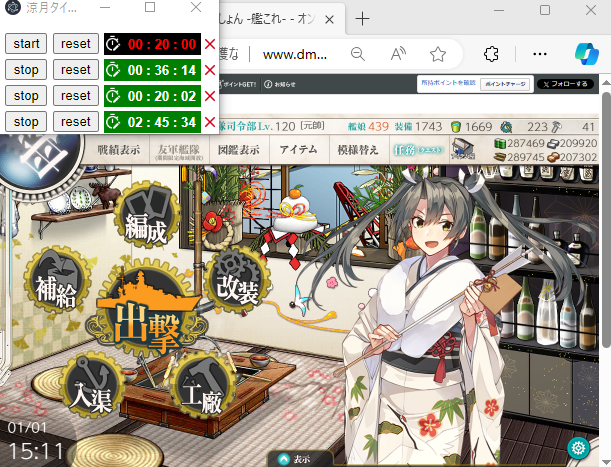
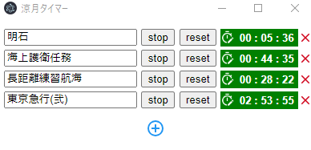

艦これ用にチューンされたマルチタイマーです
ダウンロードして解凍、exeファイルからどうぞ
以下紹介



タイマーを自由に追加し、遠征などを設定できます。
タイムセットはキー入力やスクロールで調整可能です。
プリセット＆お気に入り機能遠征や自作のタイマーをお気に入り設定できます。
アプリ停止時のタイマー再起動時に帳尻合わせするのでアプリやPCを閉じていてもタイマーは疑似的に作動しています。
ただし、その場合通知音は鳴りません
右クリックメニューからの設定右クリックメニューから通知音の設定や最前面表示のON/OFFが可能です。
ドラッグ&ドロップでの順番入れ替えタイマーやお気に入りリストは、ドラッグ&ドロップでの順番入れ替えに対応しています。